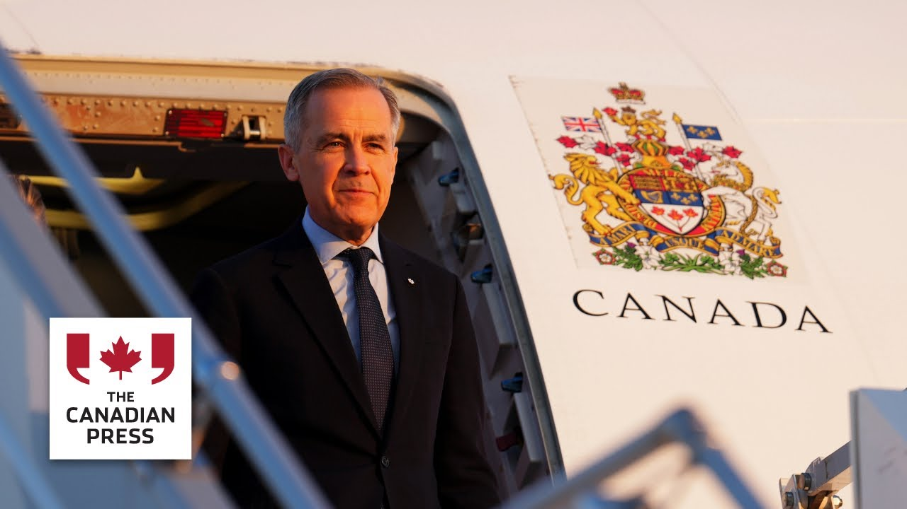

来B站一起耍【Global每日英语简报】
【卡尼待办清单上的五件事】
Summary: Prime Minister Mark Carney outlined his priorities after winning a minority government, including trade talks with the U.S., cabinet appointments, a royal throne speech, a bi-election, and budget measures.
摘要： 总理马克·卡尼在赢得少数政府后概述了优先事项，包括与美国贸易谈判、内阁任命、王室御座演讲、补选以及预算措施。

⏱️ Estimated Reading Time: 6 min
[Music] Prime Minister Mark Carney headed into the weekend with his first news conference since his Liberals won a minority government mandate in Monday's election.
[音乐] 总理马克·卡尼在周末举行了自自由党周一赢得少数政府授权后的首次新闻发布会。
He told reporters that MPs will be back in the House of Commons on May 26th.
他告诉记者，议员们将于5月26日重返众议院。
And until then, he has a bit of a to-do list on his plate.
在此之前，他手头有一些待办事项。
Here's a look at five things the prime minister will have in the weeks and months ahead.
以下是总理未来几周和几个月内要处理的五件事。
[Music] The prime minister has said repeatedly that Canada's old relationship with the United States is over.
[音乐] 总理多次表示，加拿大与美国的老关系已经结束。
And so this meeting with the president is really about carving a path forward in the trade war between the two countries.
因此，与总统的会晤实际上是为两国之间的贸易战开辟一条前进的道路。
Carney said on Friday that he expects his meeting with Trump to be quote difficult but constructive unquote.
卡尼周五表示，他预计与特朗普的会晤将是“困难但有建设性的”。
The two have spoken by phone already where Trump seemed to tone down his talk of annexing Canada during the election campaign.
两人已经通过电话交谈，特朗普似乎在竞选期间淡化了吞并加拿大的言论。
While Trump often mocked former Prime Minister Justin Trudeau, referring to him as the governor of Canada, he's yet to use that same language with [Music] Carney.
尽管特朗普经常嘲笑前总理贾斯汀·特鲁多，称他为“加拿大总督”，但他尚未对卡尼使用同样的言辞。
After winning the Liberal leadership in March, Carney swiftly appointed 23 MPs to his cabinet, not including himself.
在三月赢得自由党领导权后，卡尼迅速任命了23名议员进入内阁，不包括他自己。
It was smaller than Trudeau's last team, and Carney wouldn't say on Friday whether his post-election cabinet would be larger.
这比特鲁多的上一届团队规模小，卡尼周五未透露选举后的内阁是否会扩大。
[Music] Carney revealed on Friday that King Charles will deliver the throne speech when Parliament resumes.
[音乐] 卡尼周五透露，议会复会时，国王查尔斯将发表御座演讲。
Something that hasn't been done by a royal in almost half a century.
这是近半个世纪以来首次由王室成员完成。
The throne speech is written by the prime minister and his team and lays out the government's plans and priorities.
御座演讲由总理及其团队撰写，概述政府的计划和优先事项。
It's usually read by the Governor General, but Queen Elizabeth was the last monarch to do it back in 1977.
通常由总督宣读，但伊丽莎白女王是上一次在1977年这样做的君主。
[Music] One person who isn't in the house is Conservative leader Pierre Palv, at least not yet.
[音乐] 保守党领袖皮埃尔·帕尔夫尚未进入众议院，至少目前还没有。
On Friday, incumbent Conservative MP Damian Curick announced he will step aside from his seat in Battle River Crowoot to let Polyv run in the Alberta writing.
周五，现任保守党议员达米安·库里克宣布将让出他在巴特尔河-克罗伍特的席位，以便帕尔夫在阿尔伯塔补选中参选。
That means Carney will have to call a bi-election.
这意味着卡尼将不得不举行补选。
And while technically he doesn't have to call one for a year to replace the vacant seat, Carney told reporters on Friday he isn't playing any games with it and will ensure the bi-election happens as soon as possible.
尽管技术上他有一年时间填补空缺席位，但卡尼周五告诉记者，他不会拖延，将确保尽快举行补选。
[Music] At the very least, the government will need to introduce supply bills to get money flowing to departments.
[音乐] 政府至少需要提出供应法案，以确保资金流向各部门。
The last supplementary estimates bill was passed in November.
上一次补充预算案于11月通过。
Now, Carney ran on a platform of aggressive capital spending, and the party projected nearly $225 billion in deficits over four years.
卡尼以激进的资本支出为竞选纲领，该党预计四年内赤字将接近2250亿美元。
The party's plan includes $130 billion in new spending measures.
该党计划包括1300亿美元的新支出措施。
But Carney reiterated on Friday his intention is to slow the rate of growth in government operations costs, calling the 9% annual increase in spending in recent years unsustainable and promising to bring that down to 2%.
但卡尼周五重申，他打算放缓政府运营成本的增长速度，称近年来9%的年支出增长不可持续，并承诺将其降至2%。
He said he'll do that without cutting transfers to provinces or individuals.
他表示，他不会削减对省份或个人的转移支付。
[Music] It's a pledge he made before the election campaign when he hosted a meeting with the country's premers in Ottawa and vowed to table legislation by July 1st to allow goods to travel across the country barrierfree.
[音乐] 这是他在竞选前做出的承诺，当时他在渥太华与各省省长会晤，并誓言在7月1日前提出立法，允许货物在全国无障碍流通。
In March, he also said his government would remove labor mobility restrictions in federally regulated professions and eliminate duplication by recognizing provincial assessments for major projects.
三月，他还表示，他的政府将取消联邦监管职业的劳动力流动限制，并通过承认省级评估来消除重复工作。
Now, since the trade war began with the United States, most of Canada's premers have been pushing Ottawa in this direction.
自与美国贸易战开始以来，加拿大大多数省长一直在推动渥太华朝这个方向发展。
They argue that more free trade allows Canada to bolster its economy by opening up more domestic markets.
他们认为，更多的自由贸易可以通过开放更多国内市场来提振加拿大经济。
And that's a look into Prime Minister Mark Carney's to-do list over the next few weeks and months.
以上就是总理马克·卡尼未来几周和几个月的待办清单。
From the Canadian Press in Ottawa, I'm Nick Murray.
加拿大新闻社渥太华分社，尼克·默里报道。